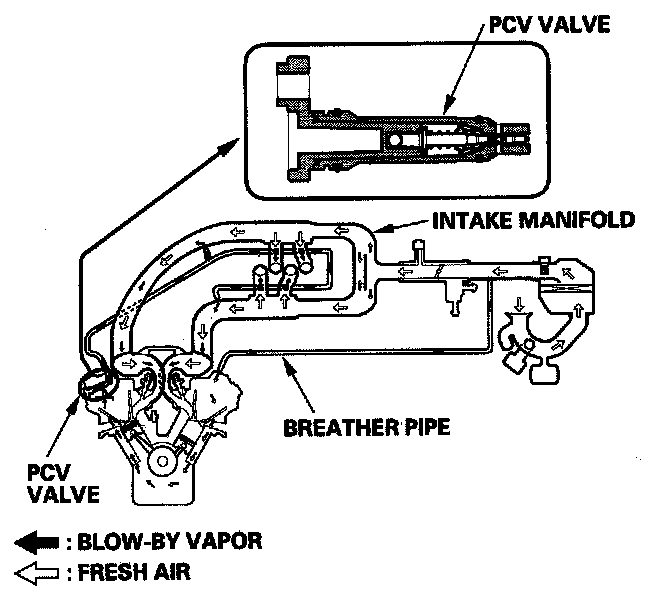

Operation CHARM
: Car repair manuals for everyone.
Home
>>
Acura
>>
2007
>>
MDX V6-3.7L
>>
Repair and Diagnosis
>>
Powertrain Management
>>
Emission Control Systems
>>
Positive Crankcase Ventilation
>>
Description and Operation
Positive Crankcase Ventilation: Description and Operation
Positive Crankcase Ventilation (PCV) System

The PCV valve prevents blow-by gasses from escaping into the atmosphere by venting them into the intake manifold.